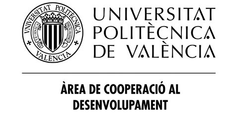
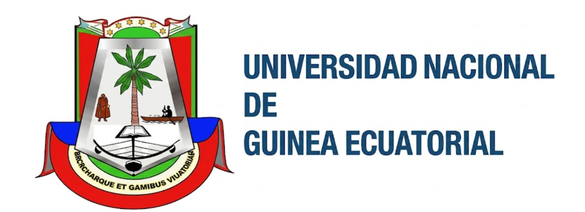

Créditos
Cómo citar: Cátedra MADERAMEN, Universitat Politècnica de València (2026), Guía práctica de autoconstrucción — Guinea Ecuatorial.
Copyright © 2026 Cátedra MADERAMEN, Universitat Politècnica de València. Todos los derechos reservados sobre la presente edición. © de las imágenes, sus autores. © de los dibujos, sus autores.
Esta obra está licenciada bajo una licencia Creative Commons Atribución-NoComercial-SinDerivadas 4.0 Internacional (CC BY-NC-ND 4.0). Para más detalles, visita https://creativecommons.org/licenses/by-nc-nd/4.0/. Para solicitudes de permisos adicionales, contacta con la Cátedra MADERAMEN: https://calab.es/catedra-maderamen/.
El presente documento ha sido promovido y elaborado a través de la Cátedra MADERAMEN, creada bajo convenio entre la Generalitat Valenciana y la Universitat Politècnica de València (UPV), en el marco del proyecto "Autoconstrucción sostenible y participativa de viviendas en Guinea Ecuatorial", financiado mediante una beca de investigación ADSIDEO Cooperación 2024 del Centro de Cooperación al Desarrollo (CCD) de la UPV, beca que ha permitido la colaboración entre la UPV y la Universidad Nacional de Guinea Ecuatorial (UNGE).
Colaboradores y agradecimientos

